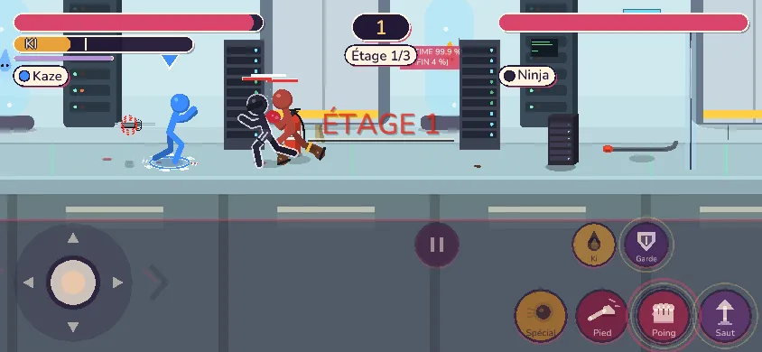
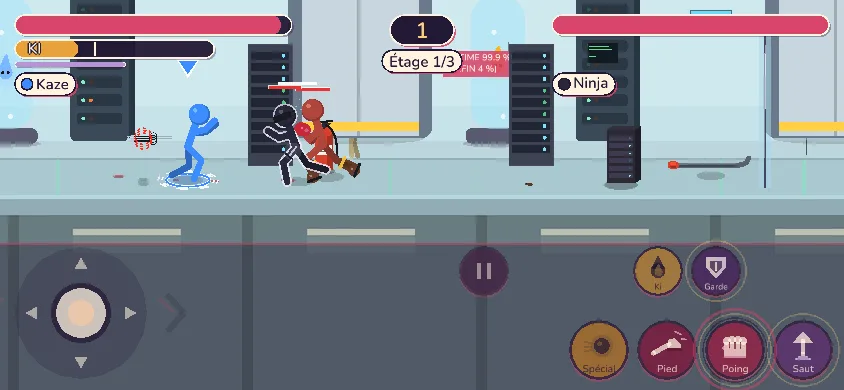
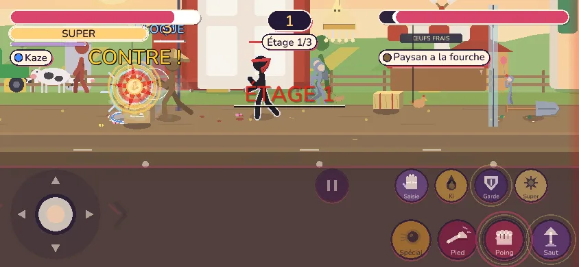
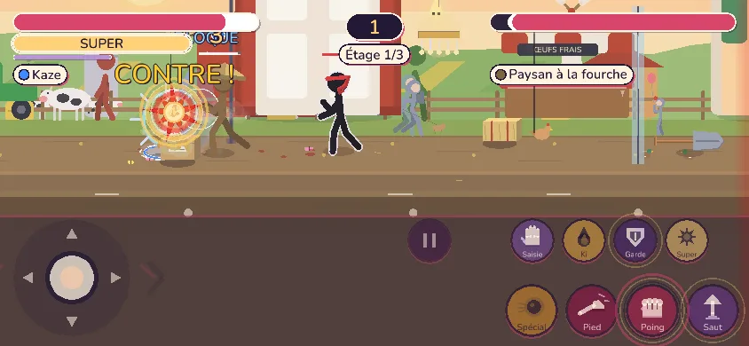
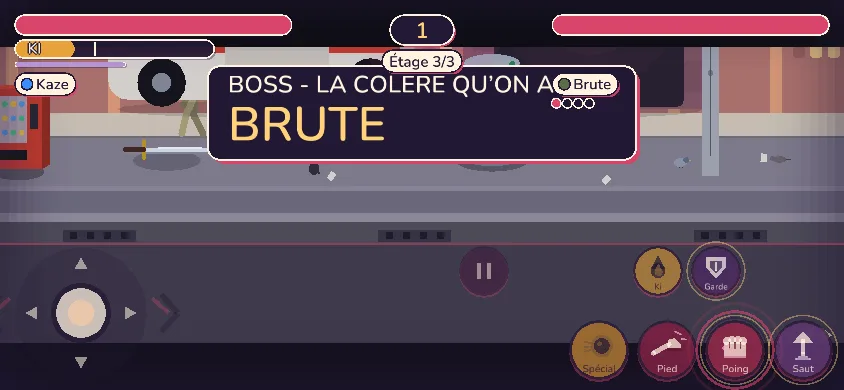
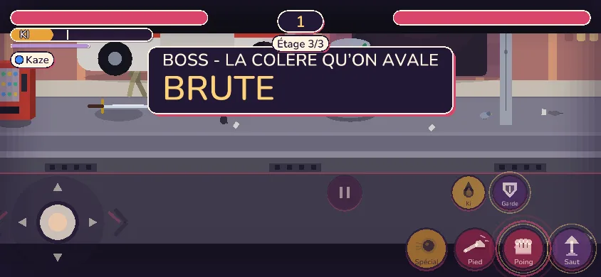
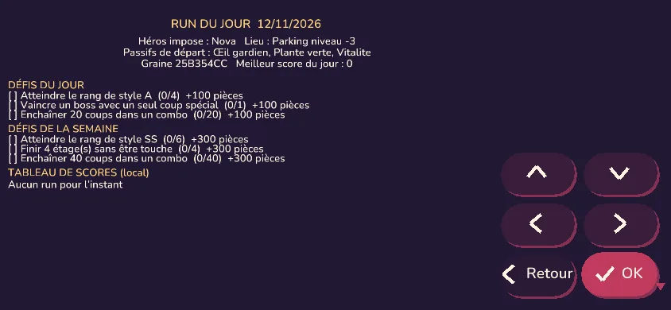
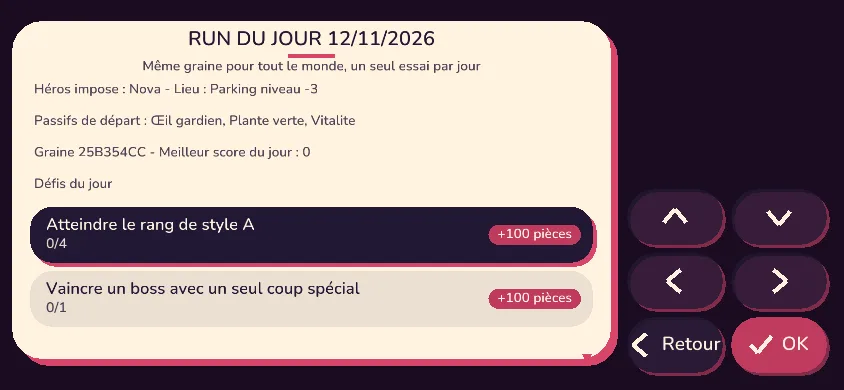
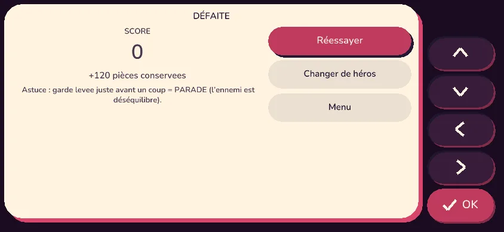

1. Titre « ÉTAGE n » rouge supprimé (doublon du HUD)
Gros titre rouge plaqué sur les combattants, en plus de la pastille « Étage 1/3 ».


2. Nom d'ennemi accentué (« à la fourche »)
Plus de « Paysan a la fourche » ; le titre « ÉTAGE » n'écrase plus le combat.


3. Carte d'intro de boss
La plaque du boss ne mord plus la carte ; « COLÈRE » porte son accent.


4. Écran « Run du jour » refait à la charte
Fond plat et texte brut, cases ASCII et vert macroquad : remplacés par la page standard.


5. Défaite : « Réessayer »
Accents restaurés (Réessayer, déséquilibre).
